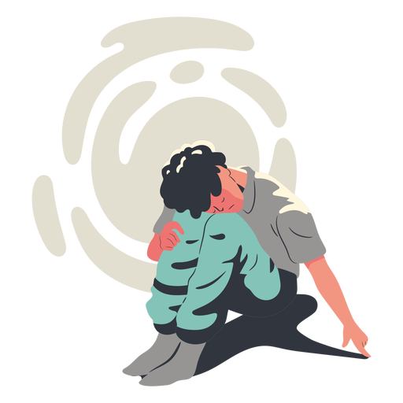
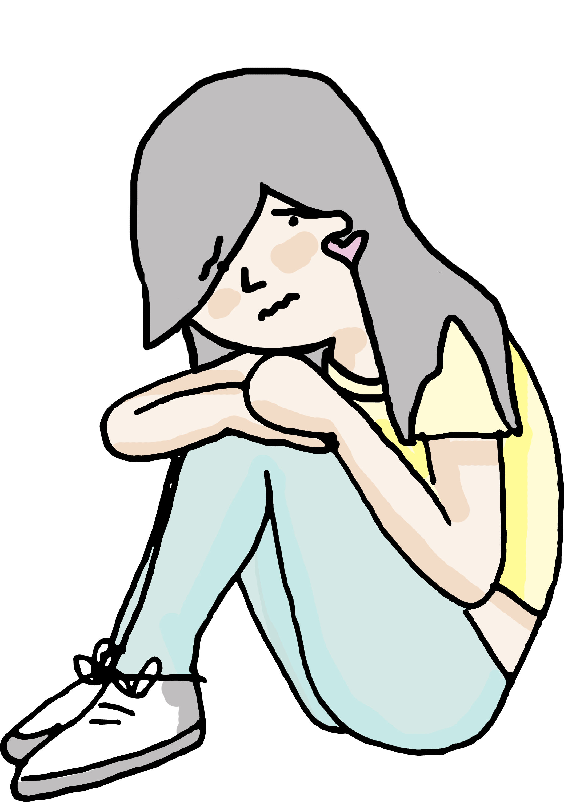

Crecimiento intelectual del individuo construido por el ejercicio mental del aprendizaje de la enseñanza empírica.
Asimilación
Condición fundamental para el aprendizaje. El educador debe garantizar que el estudiante no solo recuerde 10 que él explica, sino que reflexione sobre 10 que hace y porqué. Son elementos indispensables Ia organizaciön y conducciån del proceso de enseäanza..
Adolescencia
Es un continuo de la existencia del individuo, en donde se realiza la transición entre el infante o niño de edad escolar y el adulto. Esta transición de cuerpo y mente, proviene no solamente de si mismo, sino que se conjuga con su entorno, el cual es trascendental para que los grandes cambios fisiológicos que se produce en el individuo lo hagan Ilegar a la edad adulta. La adolescencia es un fenómeno biológico, cultural y social, por 10 tanto sus limites no se asocian solamente a características físicas. Sino también a crecimiento emocional y psicológico.
Desarrollo
Crecimiento intelectual del individuo construido por el ejercicio mental del aprendizaje de la enseñanza empírica.
Psicoanálisis
se puede definir como una teoíra de análisis clínico que analiza el inconsciente de las personas para tratar de entender comportamientos, sentimientos y formas de pensar. Además, es un método de terapia y un tratamiento.
Reinserción Social
hace mención a volver a incluir en la comunidad a un individuo que, por algún motivo, quedó marginado.
Conducta motriz y conducta adaptativa
La primera se encarga de las implicaciones neurológicas, y capacidad motriz del niño, la cual nos dice en qué proceso de madurez se encuentra. Tiene que ver con movimientos corporales y reacciones postulares.
La conducta adaptativa está a cargo de las adaptaciones del individuo entre objetos y situaciones. Es la habilidad para utilizar adecuadamente la dotación motriz en la solución de problemas prácticos.
Dificultades específicas del aprendizaje
se asocian a una de las primeras causas más frecuentes del bajo rendimiento escolar, hacer una buena prevención y detección, nos permitirá evaluar y saber como debemos intervenir para evitar futuros trastornos emocionales.
Pedagogo
Es el profesional encargado del estudio del fenómeno educativo en todos sus aspectos, por 10 tanto debe contar con nociones de psicología, sociología, filosofía y antropología. Una de sus principales funciones es la planificación, ejecución y evaluación de Ios programas educativos, así como del diseño de Ios materiales didácticos entre otras funciones.
Educación
Sin la educación no existiría Ia pedagogía ya que es justamente su objeto de estudio. La pedagogía son todos los principios teóricos que son investigados para lograr una mejora en el fenómeno educativo; por otro lado la educación, es la aplicación de las teorías que emanan de la pedagogía también con el mismo objetivo de mejora.
Proceso Enseñanza-aprendizaje
Es la manera en corno se aplica la didáctica para que Ios estudiantes aprendan significativamente y puedan obtener una educación de calidad. Ya que no siempre que se enseña se aprende
Didáctica
Es la manera en corno se aplica la didáctica para que Ios estudiantes aprendan significativamente y puedan obtener una educación de calidad. Ya que no siempre que se enseña se aprende
Didáctica
Dicho de manera general la didáctica es la rama de la pedagogía que se encarga de buscar métodos para mejorar el proceso de enseñanza-aprendizaje, es decir saber explicar y enseñar con diversos recursos para que de esta manera los estudiantes aprendan significativamente.
Principio de intervención
Principio de intervención: concibe la intervención como proceso que ha de anticiparse a situaciones que pueden entorpecer el desarrollo integral de Ias personas.
La capacidad que tiene el ser humano para construir su propio conocimiento. No respondiendo mecánicamente, más bien responde de acuerdo a sus experiencias previas y se capacita para construir sobre el conocimiento ya obtenido.
Es la rama de la psicología que se encarga del estudio del proceso de adquisición del aprendizaje.
Constructivismo
Se trata de una teoría que se basa principalmente en la construcción del conocimiento, y no en reproducción, Ia idea principal de esta teoría es que el aprendizaje se construye, Ia mente de las personas adquiere nuevos conocimientos tomando como base las enseñanzas anteriores adquiridas.
Estadios del desarrollo
Etapa física, mental y emocional que un niño atraviesa a medida de que crece y madura. Cada estadio posee unos limites de edad que son bastantes precisos aunque puedan variar de unas poblaciones a otras. Cada estadio se caracteriza por tener un periodo inicial de preparación y otro final de culminación.
En sus estudios Piaget notó que existen períodos o estados de desarrollo. En algunos prevalece la asimilación, en otros Ia acomodación. De este modo definió una secuencia de cuatro estadios "epistemológicos" (actualmente llamados: cognitivos) muy definidos en el humano.
Para Piaget el nivel preoperatorio se extiende en el niño aproximadamente entre los 2 y los 7 años.
Herencia
Es la transmisión a través del material genético contenido en el núcleo celular, de las características anatómicas, fisiológicas, etc. de un ser vivo a sus descendientes. El ser vivo resultante tendrá caracteres de uno o Ios dos padres.
Psicología
Es Ia disciplina que estudia Ios procesos mentales en sus tres dimensiones: cognitiva, afectiva y del comportamiento, a las que se pueden sumar las dimensiones moral, social y espiritual de la experiencia humana.
La Psicopedagogía y su relación de intervención con la delincuencia juvenil

En un contexto social atravesado por hechos de violencia, que aumentaron significativamente en los últimos años, problemas como las adicciones, los abusos, la violencia y una consecuente delincuencia juvenil cada vez más temprana, la intervención psicopedagógica toma impulso ya que, en cuestiones legales, puede aportar una mirada abarcativa desde sus conocimientos sobre el desarrollo psíquico y neuropsicológico del ser humano, además de elementos que se relacionan netamente con el aprendizaje y especialmente las dificultades del mismo. El psicopedagogo, gracias a su mirada clínica y una formación complementaria que le permite acceder y comprender los conocimientos específicos del área legal, puede ser de gran utilidad en instituciones como tribunales, juzgados, cárceles, e institutos de menores, entre otros.
El abuso sexual, el abuso familiar y las adicciones son los temas que necesitan especial atención y profundidad, ya que abarcan un mayor espacio en las instituciones que se ocupan de la promoción y protección de los derechos de niños, niños y adolescentes.
Pero... ¿qué puede llevar a un joven a delinquir?

La delincuencia no se produce de forma aleatoria, parte de una cultura, de unos valores, unos conflictos económicos, políticos, sociales... en los que todos estamos inmersos. Muchos jóvenes carecen de planes o proyectos vitales y son considerados incapaces de adaptarse al medio social por lo que, a menudo, toman la delincuencia como vía alternativa de conducta. Las causas, para Goleman, hay que cifrarlas en “un claro descenso en el grado de competencia emocional”, considerando como ámbitos en los que se han producido “un franco empeoramiento” los siguientes: marginación o problemas sociales (tendencia al aislamiento, a la reserva y al mal humor, falta de energía, insatisfacción y dependencia); problemas de atención o de razonamiento (incapacidad para prestar atención y permanecer quieto, ensoñaciones diurnas, impulsividad, exceso de nerviosismo que impide la concentración, bajo rendimiento académico, pensamientos obsesivos); ansiedad y depresión (soledad, excesivos miedos y preocupaciones; perfeccionismo, falta de afecto, nerviosismo, tristeza y depresión); delincuencia o agresividad (relaciones con personas problemáticas, uso de la mentira y el engaño, exceso de justificación, desconfianza, exigir la atención de los demás, desprecio por la propiedad ajena, desobediencia en casa y en la escuela, mostrarse testarudo y caprichoso, hablar demasiado, fastidiar a los demás y tener mal genio).
Una de las raíces de esta pérdida de competencia emocional por parte de los menores se encuentra en que nos encontramos en una época en la que como consecuencia de las presiones sociales y laborales “la atención cotidiana que reciben los mas jóvenes raya en la negligencia”
Los delitos en que con mayor frecuencia suelen incurrir los menores son delitos de estructura simple, como robo con fuerza, hurtos de uso de vehículos y robos con violencia e intimidación
En estos supuestos de detenciones (que solo se practican en los supuestos mas graves) según el Ministerio del Interior, en muchos casos, se ha podido comprobar la falta de interés por parte de los progenitores acerca de la forma de vida y las actividades que desarrollan sus hijos, lo que da lugar a que exista un elevado número de menores reincidentes, ya que en muchos delitos tras ser detenidos son entregados a sus padres. Esa falta de control de los progenitores da lugar a continuos comportamientos ilícitos por parte de los menores.
En cualquier caso, además de las medidas preventivas, tendentes a evitar que el menor llegue a introducirse en el mundo delincuencial, es necesario arbitrar una serie de medidas destinadas a tratar de recuperar a los menores que ya han cometido delitos. Debemos partir de postulados realistas y reconocer que el delito, como comportamiento desadaptado nunca podrá ser completamente erradicado, ni entre los adultos ni entre los menores. El Derecho Penal y el Derecho Penal Juvenil como catálogo de reacciones frente al delito siempre serán necesarios. Seguimos muy lejos de la "utopía penal" soñada por el penalista Pedro Dorado Montero: la de un Derecho Protector de los criminales que fuese un Derecho "sin delito y sin pena.
Me alegra saber que pertenecemos al mismo bando, pero